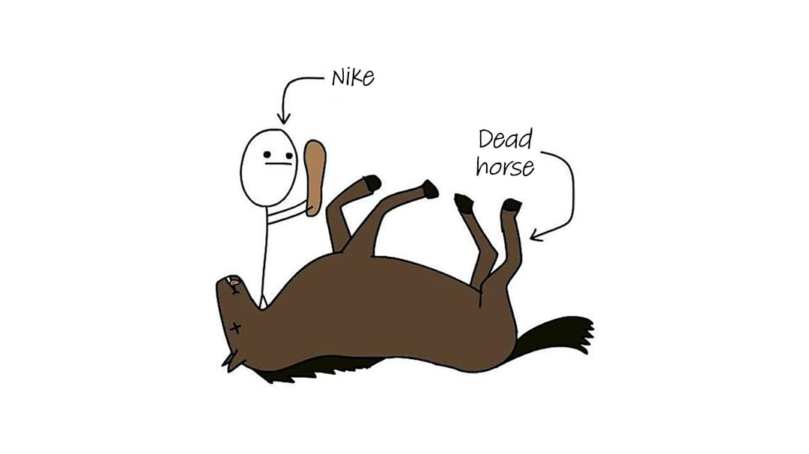

Originally published in June 2026. Sources and factual corrections added . This essay keeps its June perspective; the business results discussed were available by 15 June 2026.
Nike, one of the most iconic brands ever built, has gone through a sharp financial decline. As a designer, I see a warning in the relationship between its products, its storytelling and its commercial decisions. That is a reading of the evidence, not a claim that creative choices explain every part of the downturn.
For the year ended 31 May 2025, Nike reported revenue of $46.3 billion, down 10% on a reported basis, and net income of $3.2 billion, down 44%. Fiscal 2025 results.
Economic conditions, geography, distribution and execution all matter. My concern here is the part designers can influence: what happens when a brand’s creative decisions stop making its products feel worth choosing.
Before the Fall: What Made Nike, Nike
Nike was never just a shoe company. Nike was a feeling company.
The 2018 Dream Crazy campaign by Wieden+Kennedy is a useful example. Its athletes gave the work a point of view beyond the transaction. The campaign made ambition feel personal, and it gave the Swoosh something to stand beside.
What stays with me is the emotional invitation. A product can be technically excellent and still need a story that gives people a reason to care.
That emotional contract is what I value in Nike’s best work. Sport becomes a metaphor for life, and the products become equipment for your aspirations. The Swoosh can feel like a quiet companion to the belief that you are the protagonist of your own story. That meaning works with product innovation; it does not replace it.
The design lesson is not to abandon the shoe for a slogan. It is to make the product, the athlete and the story reinforce one another. Make people feel something that the product can credibly carry.
The Architecture of Collapse
What follows is my reading of where that coherence became harder to sustain. The financial record shows the commercial strain; it cannot, on its own, tell us how much each creative decision caused.
1. Losing the Thread of the Brand
Nike announced John Donahoe’s appointment in October 2019; he became CEO on 13 January 2020. It is tempting to turn the story into a contest between a technology executive and a creative company. An executive’s background alone cannot establish what caused the subsequent results.
In December 2023, Nike announced a plan targeting up to $2 billion in cumulative savings over three years, with restructuring costs primarily associated with severance. That establishes a cost programme. It does not establish which creative capabilities were lost or the effect of any particular departure.
A simple budget-cut explanation does not fit the spending record: fiscal 2025 demand creation expense rose 9% to $4.7 billion, driven by brand and sports marketing. Nike’s expense breakdown.
My criticism is about the coherence and distinctiveness of the work, not an unsupported claim that spending alone collapsed. A brand can spend more and still struggle to make the work mean more.

The Dream Crazy image above is powerful to me because its line and its subject belong together. That is a specific creative judgment about this campaign, not evidence that every later Nike campaign lacked meaning.
That does not make every execution equally convincing. The question I would ask of any campaign is whether its particular story earns its emotional promise and gives the product something credible to stand for.
2. Overflogging Legacy: The Death of Scarcity
A second concern is how a brand manages familiar products. An icon needs recognition, but it also needs a reason to feel alive now.
The Air Force 1, designed by Bruce Kilgore and introduced in 1982, was the first basketball shoe to feature Nike Air. Its longevity is an achievement. The strategic question is how to keep such a familiar design desirable while making room for new products.
Nostalgia can revive interest in a familiar design. It does not guarantee that the same level of demand will continue indefinitely. That is a planning risk, rather than a sales history that can be inferred from sold-out anecdotes.
My reading is that relying too heavily on familiar franchises can make that distinction easy to miss. More availability may bring sales today while weakening the sense of discovery tomorrow. The balance has to be managed, not assumed.

Desirability requires scarcity or freshness and, in some cases, usually both. When you flood the market with anything, be it a print, a typeface, a logo, or a sneaker, you train the eye to ignore it. It becomes wallpaper. The Air Jordan 1 went from a statement piece to background noise.
On its 21 March 2024 earnings call, Nike said it was reducing supply of classics including Air Force 1 and rebalancing its portfolio toward newness. That is a documented product-management decision, and a useful indication that the balance needed attention.
The design lesson is that familiarity needs renewal. Scarcity is one tool, not a universal rule: an accessible everyday shoe and a limited collaboration have different jobs. The product and its availability should support the promise the brand is making.
The pullback shows Nike was addressing that balance. It does not quantify the cultural or financial cost of getting it wrong.
3. The Direct-to-Consumer Gamble That Burned the Wholesale Bridge
Nike introduced Consumer Direct Offense in June 2017, emphasizing innovation, speed and direct consumer connections. Its 2020 annual report describes Consumer Direct Acceleration as the next digitally enabled phase. These were broader strategies than simply cutting out retailers.
The attraction of owning the customer relationship is clear. The risk is treating other retail environments as disposable rather than asking what they contribute to discovery, service and reach.
Wholesale floors can be discovery environments. They can put a product in front of a shopper who did not arrive looking for that particular brand. My concern is that a channel decision can also become a brand-experience decision; a higher direct margin does not capture every consequence.
By March 2024, Nike was telling investors it would increase support for physical retail and place new products across thousands of doors. That direction recognizes a role for the wider marketplace alongside direct sales.
Direct and wholesale should not be treated as enemies. A premium experience can travel through either. The harder task is making the product, price and presentation feel consistent across both.
Fiscal 2025 put pressure on both channels: NIKE Brand Digital fell 20%, NIKE Direct fell 13% and wholesale fell 7%, with the latter two changes on a reported basis. Full-year channel results.
The Competition Did Not Stand Still
While Nike was making these strategic missteps, the sportswear world did not wait for Nike to find itself.
Macroeconomic conditions and regional exposure complicate any comparison. Different reporting periods, product mixes and currencies also matter. Competitors’ results can provide context without isolating the effect of Nike’s branding choices.
Nike’s third-quarter fiscal 2026 release reported regional weakness in Greater China and EMEA alongside growth in North America. That uneven picture is another reason to resist explaining a global business with one creative diagnosis.
Adidas reported 12% currency-neutral revenue growth in calendar 2024. Its release described momentum across lifestyle and performance, as well as reduced discounting in the fourth quarter. That is stronger evidence than an unsupported share-price comparison or an undefined claim about market share.
On reported 29.4% revenue growth in calendar 2024, alongside strong full-price demand in its fourth quarter. The comparison is not a controlled experiment, and calendar 2024 is not Nike’s fiscal 2025. It does show that growth and a strong product proposition could coexist in the broader category.
As a designer, I take a simpler lesson from that competition: give people a specific reason to want the product. A claim about who “won” running, or how much Nike cut research spending, would need evidence that these releases do not provide.
Cultural relevance is not something a balance sheet measures directly. I would judge it through the actual products, collaborators and stories a brand puts into the world, without turning that judgment into an unsupported market-share statistic.
Nike’s challenge, in my view, is to make its new work feel necessary rather than let its history do all the persuading.
The Design-Finance Connection
Nike’s fourth-quarter fiscal 2025 gross margin fell 440 basis points to 40.3%, primarily because of higher discounts and changes in channel mix. The earnings release identifies both factors.
When your products are no longer desirable at full price, you discount. When you discount a luxury or premium brand, you teach the consumer that the real price is the sale price. You train them to wait. You erode the very premium you spent decades building.
This is where design enters the financial discussion for me. Desirability can support full-price selling, and product innovation, advertising and cultural relevance can contribute to it. The financial statements do not separate their individual effects from pricing, channel mix and other business decisions.
A margin decline is not a direct meter for creative failure. It is a reason to ask better questions about the product, its price and the conditions under which it is being sold.
Competitor examples are useful prompts, not proof that a single creative philosophy caused their results. The lesson I would carry into a design brief is to protect a convincing product proposition through the commercial decisions around it.
Creative investment matters. So does whether that investment produces something people find worth paying for. Those are related questions, not interchangeable budget lines.
The Turnaround
Nike announced Elliott Hill’s return in September 2024, effective 14 October. He brought 32 years of prior experience at the company. I read that choice as a return to institutional knowledge; the appointment itself does not prove that one leadership change would resolve every problem.
The question for the new leadership was how to turn that experience into a stronger connection between sport, product and the marketplace.
Nike’s October 2025 innovation announcement brought design, innovation and product teams into a shared organisation and described platforms including Aero-FIT, Air Milano and Nike Mind. Mind was identified as footwear: the Mind 001 mule and Mind 002 sneaker. These are announced initiatives, not proof of a completed recovery.
For me, the creative opportunity is to make that work visible in the product and the story around it. A strategy announcement only becomes meaningful when the experience lives up to it.
The fiscal 2026 quarter ended 28 February 2026 offered a mixed picture: global wholesale revenue rose 5% on a reported basis, while NIKE Direct fell 4% and net income fell 35%. Those results support caution rather than a declaration that the turnaround is complete.
The recovery, if it comes, will need commercial execution as well as creative conviction. My hope is that Nike can make the product and its stories feel inseparable again.
What You Can Take From This
The through-line I take from this is a warning about institutional belief: emotional advertising, cultural relevance and product desirability should be treated as assets to build. That is my design interpretation, alongside the documented pressures on channels, margins and regional demand.
Nike’s experience is not a clean experiment in finance versus creativity. Its marketing spending increased even as its results weakened. The useful question is whether the company was creating the right work, putting it in front of people in the right places and giving them a reason to choose it at full price.
Brand premium is a financial asset. It accrues through sustained creative investment over years and depletes through neglect in months. Once consumers learn to wait for a sale, you have taught them the real price. Once they stop associating a product with aspiration, no discount can recover that association.
Nike’s strongest campaigns show what a powerful emotional connection can look like. The challenge is to sustain that connection while the organisation, its products and its channels change. I cannot assign a percentage of the downturn to creative choices; I can argue that those choices belong in the business discussion.
Nike was attempting to rebuild as this essay was first published in June 2026. The reported signals were mixed. Product renewal, better storytelling and a healthier marketplace would need time to show whether they could support lasting improvement.
The Swoosh has a powerful history to work with. Whether new generations feel its cultural weight is partly a creative question, and it is one the financial discussion should leave room to ask.